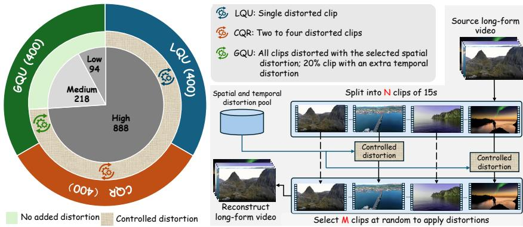
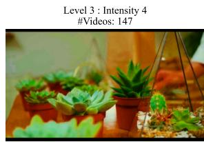

arXiv new; ECCV 2026; long-video VLM benchmark · P2 · 2026-07-03
LongVQUBench：视频 SSL/VLM 预训练如果声称长时理解，需要能解释长期视觉质量和稀疏局部失真；这类 benchmark 可反向约束表征学习目标
把视频质量理解从短 clip/局部失真扩展到长时段、跨事件和全局质量归因。
编号2607.01086
优先级P2
类别arXiv new; ECCV 2026; long-video VLM benchmark
会议arXiv new; ECCV 2026; long-video VLM benchmark
方法构建 1,200+ 长视频、1,500 QA，分为 local event quality、cross-event quality reasoning、global quality understanding，并加入 needle distortion QA。
来源arXiv / OpenReview
先说结论。视频 SSL/VLM 预训练如果声称长时理解，需要能解释长期视觉质量和稀疏局部失真；这类 benchmark 可反向约束表征学习目标。 把视频质量理解从短 clip/局部失真扩展到长时段、跨事件和全局质量归因。


核心问题
视频 SSL/VLM 预训练如果声称长时理解，需要能解释长期视觉质量和稀疏局部失真；这类 benchmark 可反向约束表征学习目标。
方法拆解
构建 1,200+ 长视频、1,500 QA，分为 local event quality、cross-event quality reasoning、global quality understanding，并加入 needle distortion QA。
主要贡献
把视频质量理解从短 clip/局部失真扩展到长时段、跨事件和全局质量归因。
实验看点
摘要称 14 个 LVLM 随视频长度和推理层级增加明显退化，说明现有 VLM 长时视觉表征/记忆不足。
局限与读法
benchmark 论文，不提供新的自监督训练目标；视频质量理解也不是所有通用视频任务的充分代理。